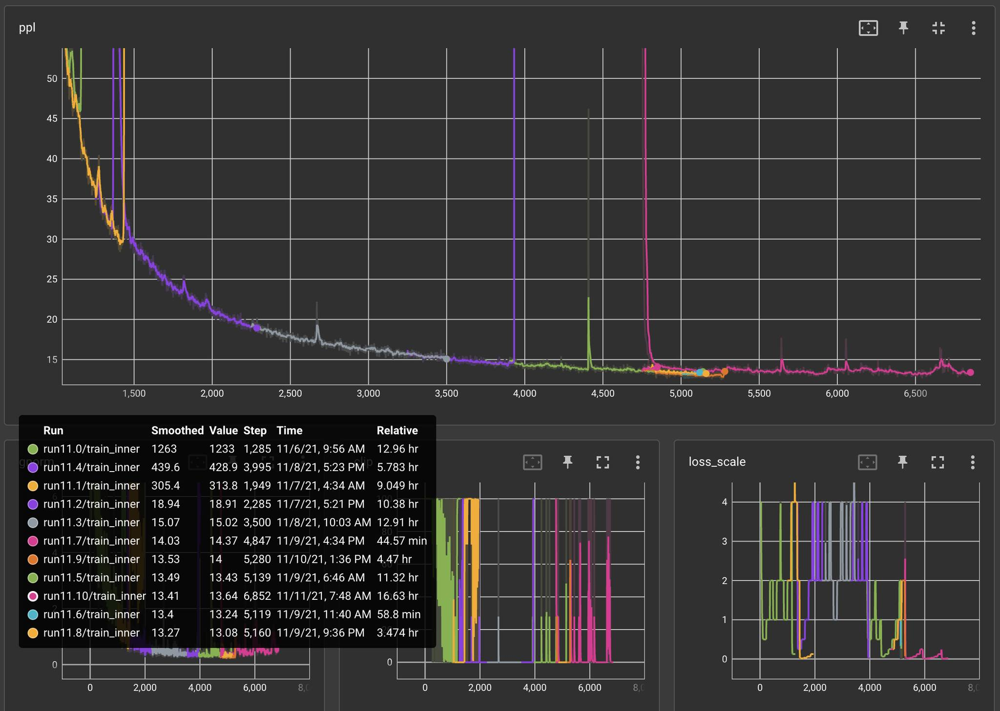

Fermi estimation is a technique for estimating quantities through rough approximations and educated guesses. Named after physicist Enrico Fermi, this method involves breaking down a problem into simpler, more manageable parts, making reasonable assumptions, and using simple arithmetic to arrive at a good enough answer.
This post walks you through a simple example of Fermi estimation of a deep learning model. Specifically, we will try to estimate the design parameters of a hypothetical GPT-5 with 1 trillion parameters. Along the way, we will touch upon various other items like the Landauer limit, carbon taxing, etc.
GPT-like AGI
Let’s get into the mood for Fermi estimation, by estimating the number of parameters necessary for achieving human-level Artificial General Intelligence, under two assumptions: that a GPT-like architecture is enough; that it requires only matching the human brain in the “numbers”.
Let’s estimate how many layers the hypothetical GPT model should have. When prompted with a question, the first answer comes to mind in about a second, and it is generally a good one, if not the best. Perhaps slow deliberation is nothing but stringing together a long chain of snap judgments, guided by snap judgments about snap judgments.
The characteristic time-scale of a brain is 0.01 seconds – the fastest brainwave, gamma wave, is 100 Hz. This indicates that the brain takes on the order of 100 steps to make a snap decision – the “hundred-step-rule” of Jerome Feldman(Feldman and Ballard 1982). This is suspiciously close to the depth of the largest model of GPT-3, which has 96 layers.
How many parameters would such a model require? The brain has \(10^{15}\) synapses. It’s unclear how precise each synapse is, but one estimate states that the hippocampal synapse has a precision of about 5 bits (Bartol Jr et al. 2015), which can be stored within a 16-bit floating point number, with room to spare.
Assuming that, we expect an AGI GPT to have \(10^{15}\) parameters, or 1000× that of our hypothetical GPT-5.
Chinchilla Scaling Law
The paper Training Compute-Optimal Large Language Models (Hoffmann et al. 2022) reported a series of training runs on language models, trained by Google DeepMind researchers. Each training run is characterized by four numbers:
- \(L\): the final loss (negative log-likelihood per token) achieved by the trained model.
- \(N\): the number of parameters in the model.
- \(D\): training dataset size, measured in tokens.
- \(C\): training compute cost, measured in FLOP.
After training a few hundred models, they obtained a large dataset of \((L, N, D, C)\), and they fitted a statistical law of the form
\[L = \frac{A}{N^\alpha} + \frac{B}{D^{\beta}} + L_0,\]
where the parameters are
\[\alpha = 0.34, \beta = 0.28, A = 406.4, B = 410.7, L_0 = 1.69.\]
They also estimated that the cost of training compute \(C\) is proportional to \(ND\). This is understandable, because each token must flow through the entire model and “hit” each parameter once, incurring a fixed number of floating point operations. They estimated that it takes 6 FLOPs per parameter per token. That is,
\[C = C_0 ND, \quad C_0 = 6\]
Given the assumptions, for each fixed computing budget \(C\), we can solve for the optimal \(D\) and \(N\), which is usually referred to as “Chinchilla optimal” training:
\[\begin{cases} \min_{N, D} L = \frac{A}{N^\alpha} + \frac{B}{D^{\beta}} + L_0,\\ \text{such that } C_0 ND = C. \end{cases}\]
Solve the above equations symbolically to find \(N_{opt}, D_{opt}\) as a function of \(C, C_0, \alpha, \beta, A, B\). Then, plug in the numerical values of the parameters, to find a numerical expression for \(N_{opt}, D_{opt}\) as a function of \(C\).
Solution
Since \(C = C_0 ND\), we have \(N = \frac{C}{C_0 D}\). Plug it into \(\min_{N, D} L = \frac{A}{N^\alpha} + \frac{B}{D^{\beta}} + L_0\), we obtain
\[\min_{D} L = \frac{A}{(\frac{C}{C_0 D})^\alpha} + \frac{B}{D^{\beta}} + L_0.\]
Take derivative with respect to \(D\) and set it to zero. We get an expression for \(D_{opt}\). Plug it back to \(C = C_0 ND\), we get an expression for \(D_{opt}\). These simplify to:
\[N_{o p t}(C)=G\left(\frac{C}{C_0}\right)^a, \quad D_{o p t}(C)=G^{-1}\left(\frac{C}{C_0}\right)^b, \quad \text { where } \quad G=\left(\frac{\alpha A}{\beta B}\right)^{\frac{1}{\alpha+\beta}}, a=\frac{\beta}{\alpha+\beta}, b=\frac{\alpha}{\alpha+\beta}.\]
Plugging in the numerical values, we get
\[\begin{cases} N_{opt}(C) = 0.6 \; C^{0.45} \\ D_{opt}(C) = 0.3 \; C^{0.55} \\ L_{opt}(C) = 1070 \; C^{-0.154} + 1.7 \end{cases} \]In the same paper, they also performed a direct statistical fitting, to find the optimal \(N, D\) for a given \(C\), without going through the intermediate steps above. This gives a slightly different result (only slightly different – as you would know after solving the previous problem):
\[N_{opt}(C) = 0.1 C^{0.5}; \quad D_{opt}(C) = 1.7 C^{0.5}.\]
For the rest of the essay, we will use these equations as the Chinchilla scaling laws. Do not use the equations you derived for the previous problem.
Suppose we decide that our next AI should have 1 trillion (\(N = 10^{12}\)) parameters, and we use Chinchilla scaling laws. How much compute would it cost to train, and how many tokens would its training dataset have?
Solution
\(N = 0.1 \times C^{0.5} = 10^{12}\), so \(C= 10^{26}\) FLOP, and \(D = 1.7 \times 10^{13}\), or 17 trillion tokens.Dataset size
Assuming each English word cost about 1.4 tokens, how many English words would 10 trillion tokens be? Assuming each page has 400 words, and each book has 300 pages, how many books is that? To put it into context, look up the size of Library of Congress, and Google Books, and compare with the number we just calculated.
Solution
\(10 / 1.4 = 7\) trillion words. If each book has \(400 \times 300 = 0.12\) million words, then that is 60 million books, if they were all in English.Since humans are kind of the same everywhere, book lengths should be kind of the same everywhere – information-dense languages would naturally have books with lower apparent word-count, but the same information (measured in bytes).
Memory requirement
Typically, a deep learning model has 16-bit floating point parameters. Modern systems sometimes use lower precision (e.g. 8-bit) floating point numbers to save space, but generally it is necessary to use at least 16-bit during training, and the model is converted to lower precision after training (“post-training quantization”).
Given that each parameter is a 16-bit floating point number, how much memory does it cost to store a model with 1 billion parameters? How about our hypothetical GPT-5, which has 1 trillion parameters? How many A100 GPU (VRAM = 40 GB) would be required to contain the full GPT-5 model?
Solution
1 billion parameters is 2 billion bytes, or 2 GB. Our hypothetical GPT-5 would take up 2 TB. It would take 50 A100 to contain it.
Now, 50 A100 GPUs has a running cost of about 100 USD/hr, but not such a terrible problem, but then, during training, you would have to run an optimizer like Adam, which would need three floating point numbers per parameter (gradient, momentum, scale), instantly increasing the memory requirement to 200 A100 GPUs.Memory cost
This table1 gives the price per megabyte of different storage technology, in price per megabyte (2010 dollars), up to 2018.
1 Source: Storage 2: Cache model – CS 61 2018.
| Year | Memory (DRAM) | Flash/SSD | Hard disk |
|---|---|---|---|
| ~1955 | $411,000,000 | $6,230 | |
| 1970 | $734,000.00 | $260.00 | |
| 1990 | $148.20 | $5.45 | |
| 2003 | $0.09 | $0.305 | $0.00132 |
| 2010 | $0.019 | $0.00244 | $0.000073 |
| 2018 | $0.0059 | $0.00015 | $0.000020 |
The same costs relative to the cost of a hard disk in ~2018:
| Year | Memory | Flash/SSD | Hard disk |
|---|---|---|---|
| ~1955 | 20,500,000,000,000 | 312,000,000 | |
| 1970 | 36,700,000,000 | 13,000,000 | |
| 1990 | 7,400,000 | 270,000 | |
| 2003 | 4,100 | 15,200 | 6.6 |
| 2010 | 950 | 122 | 3.6 |
| 2018 | 295 | 7.5 | 1 |
Suppose long-term memory storage can last 1 year before being replaced. How much money does it cost per year to store a 1 trillion parameter model on an SSD, the most expensive form of long-term storage? How much money does it cost to store a 1 trillion parameter model on DRAM memory? Use 2018 prices.
Solution
SSD cost 0.00015 USD/MB in 2018, or 0.15 USD/GB. 1 trillion parameters cost 2000 GB of storage, or about 300 USD. So the total cost of storage is 300 USD/year, just a rounding error.
In contrast, DRAM cost 0.006 USD/MB, which is 40x that of SSD, so the total cost is 12000 USD.
Now, compared with the cost of A100 GPU themselves? It takes about 50 A100 GPU to run the model, and each would cost about 20,000 USD. So the cost of long-term memory is essentially zero, and the cost of DRAM is about \(\frac{12000}{20000\times 50} = 1\%\) of the total cost of GPU.
So what is the limit? The memory bandwidth, which we will see in the next question.Memory bandwidth and latency
While the memory itself is cheap, moving the data requires expensive high-bandwidth wiring. Indeed, the memory bandwidth between the DRAM (or “VRAM” for “Video RAM”) and the little processors on the GPU is a main bottleneck on how good the GPU can perform.
During a single forward pass of a model, the parameters of the model are loaded from the DRAM of the GPU into the fast cache memories, then pushed through the thousands of computing processors on the GPU.
A100 GPU has a memory bandwidth of 1.6 TB/s.
What is the minimal latency, in seconds, for the GPU to perform a single forward pass through our hypothetical GPT-5 model with 1 trillion parameters? How many tokens can it output (autoregressively) in one minute? How about GPT-3 (175 billion parameters)?
Since we are just trying to compute an order-of-magnitude estimate, let’s assume for the problem that the model fits onto a single DRAM on a single GPU. You can also ignore the need to read/write model activations and optimizer states.
Solution
Since the model takes up 2 TB of memory, it would take at least 1.3 seconds to even load the model from DRAM, during a single forward pass.
Autoregression means that the next token cannot be generated until the previous one is already generated, so the model can only generate one token per 1.3 seconds, or 46 tokens per minute. A Chat-GPT5 would be a very slow talker!
However, it can run in batch mode. So for example, it might be able to run 1 million conversations in parallel, outputting one token for all conversations every 2 seconds. Latency is the hard limit, but throughput is not.
GPT-3 with 175 billion parameters would run 1000/175 times faster, at 262 tokens per minute, about the speed of a fast human talker. This corresponds well with the general impression that ChatGPT types about 200 words a minute.
Batch inference
There are some ways to improve latency. For example, the model can be parallelized over several GPUs, which effectively increases the memory bandwidth. For example, “tensor parallelism” splits each layer into several GPUs.
There is also “pipeline parallelism”, which splits the model into layers. The first few layers go into one GPU, the next few go into another, and so on. This does NOT decrease latency, but it does increase throughput.
The fundamental bottleneck in an autoregressive model like GPT is that, by design, they have to start a sentence without knowing how it will end. That is, they have to generate the first token before generating the next one, and so on. This can never be parallelized (except by egregious hacks like speculative decoding).
One reason Transformers dominated over RNN is that training and inferring an RNN both must be done one-token-at-a-time. For Transformers, training can be done in parallel over the entire string. Inferring however still cannot be parallelized.
Parallelization tends to be a deeply troublesome business – parallel programming is generally deeply troublesome. However, there is a general trick to improve throughput: batch mode. For example, GPT-5 might be able to run 1 million conversations in parallel, outputting one token for all conversations per forward pass. This trick works until the batch size is so large that the activations due to tokens takes up about as much memory bandwidth as the model parameters.
Concretely, we can estimate what is a good batch size for GPT-3 175B. It has 96 attention layers, each with 96×128-dimension heads. It is typically run with 16-bit precision floating point numbers. For a single token, how many megabytes would all the floating point activations cost?
Solution
A single token would cost \(96 \times 96 \times 128\) floating point activations, or about 2.4 MB.The model itself has 175 billion 16-bit floating point parameters, taking up about 350 GB. How many tokens do we need to put into a batch, before the activations occupy the same amount of memory as the model parameters?
Solution
In order for the activations of tokens to occupy the same memory as the GPT-3 parameters itself, we need about \(\frac{350 \;\mathrm{GB}}{2.4 \;\mathrm{MB}} = 0.15 \text{million tokens}\).
If we count the optimizer states for the model during training, then GPT-3 takes up \(4 \times 350 \;\mathrm{GB} = 1.4 \;\mathrm{TB}\), and so we need about 0.6 million tokens.
This explains why during training, the batch sizes of the largest models typically are on the order of 1 million tokens. It also shows why there is a natural drive towards scale – only the largest companies can expect to regularly run 0.2 million chats simultaneously.Training cost
How much money does compute cost? We can work through an example using the current standard computing hardware: Nvidia A100 GPU (40 GB VRAM version).
The most important specifications are:
- Unit price: 15000 USD.
- Rental price: 2 USD/hr.
- Speed: 0.3 petaFLOP/s = 3E14 FLOP/s.
- Power: 0.3 kW.
- Memory bandwidth: 1600 GB/s.
In the literature about the largest AI models, the training cost is often reported in units of “petaFLOP-day”, which is equal to 1 petaFLOP/second x 1 day. How many FLOP is 1 petaFLOP-day? What is the equivalent number of A100-hour? If we were to buy 1 petaFLOP-day of compute with rented A100 GPU, how much would it cost?
Solution
1 petaFLOP-day = 1 petaFLOP/second x 1 day = 1E15 FLOP/s x 8.64E4 s = 8.64E19 FLOP.
Since 1 A100 can run at 0.3 petaFLOP/s, getting 1 petaFLOP-day requires us to run 1/0.3 A100 for 1 day, or 80 A100-hours. At the price of 2 USD/hr, it would cost 160 USD.The largest model of GPT-3 cost 3640 petaFLOP-days to train (according to Table D.1 of the report). How much would it cost if it were trained with A100? How much money did it cost to train GPT-4, which is rumored to cost 2E25 FLOPs?
In reality, the GPU cannot be worked to their full speed, and we only use about 30% of its theoretical peak FLOP/s (so for example, for A100, we only get 0.1 petaFLOP/s, instead of 0.3 petaFLOP/s).2 For this question, we assume that the utilization rate is 100%.
2 The utilization rate of 30% is according to EpochAI.
Also, we are assuming the training happens in one go, without hardware failures, divergences, and other issues requiring restart at a checkpoint. There is not much published data from large-scale training, but the OPT-175B training run (described later) took 3 months to complete, but would have taken only 33 days if there were no need for the many restarts. This suggests that the restarts would increase the computing cost by 2× to 3×.
Solution
The cost of GPT-3 is \(3640 \times 160 = 0.6\) million USD.
For GPT-4, it cost 2E25 FLOPs = 2.3E5 petaFLOP-days = 37 million USD.
And accounting for the utilization rate of 30%, that would give us 110 million USD.
Oh, and if you want some kind of official confirmation? OpenAI’s CEO Says the Age of Giant AI Models Is Already Over | WIRED
At the MIT event, Altman was asked if training GPT-4 cost $100 million; he replied, “It’s more than that.”
For context, here are the costs of development of various items3:
3 Sorry, not adjusted for inflation to the same year, but they are roughly in the range of 2000–2020 USD.
- iPhone 1: 150 million USD.
- A typical 5 nm chip: 0.5 billion USD.
- Airbus A380: 18 billion USD. (Bowen 2010, Table 4.3)
- Three Gorges Dam: 250 billion CNY, or about 30 billion USD.
- Manhattan Project: 24 billion USD (2021 level)
- Apollo Program: 178 billion USD (2022 level)
Comment on the cost of our hypothetical GPT-5. Is it on the order of a large commercial actor like Google, or a state actor like China?
Solution
The cost is on the order of 1 billion USD, which is roughly the largest projects undertaken by private corporations. Larger models, as those contemplated by AGI projects in Google, OpenAI, etc, have historically been undertaken by state actors only.Here is another way to estimate. Building a large AI model, according to accountancy, would be investment into a production machine, and thus part of “capital expenditure” (“CapEx”). We can find out what proportion is 1 billion USD in their total CapEx. I looked it up here.
- During the 2020–2022, Microsoft has yearly CapEx on average 25 billion USD.
- Google has about 25 billion USD.
- Meta, 20.
- Amazon, 63.
In short, training something like GPT-5 would cost a lot, on the order of 5% of total CapEx, even by the standards of the largest companies. It can probably scale up by another factor of 10× if they really push it, but not more.
In order to train even larger AI models, those AI models must enter production. They must become a productive member of society, otherwise the company would nott have the money to train them.
Microsoft announces new supercomputer, lays out vision for future AI work (2020):
The supercomputer developed for OpenAI is a single system with more than 285,000 CPU cores, 10,000 GPUs and 400 gigabits per second of network connectivity for each GPU server. Compared with other machines listed on the TOP500 supercomputers in the world, it ranks in the top five, Microsoft says.
The largest companies, like Microsoft have GPU on the order of 10000 A100. What is the wall clock hour of training GPT-5, assuming you have 10000 A100, perfect utilization, and no interruptions?
Solution
83 million hours / 10000 = 350 days. Almost exactly 1 year.The difficulty of large-scale training
Large models do end up diverging many times during training runs, requiring restarts. Sometimes the divergence is so bad that the whole training run must be started from scratch. Sometimes the convergence is too slow, requiring fixes to the optimizer and learning rate schedules, etc. All together, we should expect the failures, restarts, deadends… to triple the cost at least, to ~1 billion USD.
It is not easy to find “stories from the trenches” for actually training large-scale neural networks that really show this, but thanks to Meta, we have one. In 2021, a team of 5 engineers from Meta trained a LLM with 175 billion parameters, in 3 months, using 1024 80GB A100 GPUs from. Excluding all the divergences, hardware failures, and other issues that caused lost progress, the final model would have taken about 33 days of continuous training.
They have kept journals during their training. This is now published at metaseq/projects/OPT/chronicles at main · facebookresearch/metaseq · GitHub. You can see how difficult it is to train a large model. Selected quotes:
These notes cover ~90 restarts over the course of training the lineage of this current model (experiments 12.xx).
Found issues with the new dataset where perplexity was unreasonably low… After applying as much regex-ing as we could to salvage the dataset, we relaunched another set of experiments to test LPE (experiments 20-29) on the new dataset. We didn’t have time to retrain a new BPE on the final dataset, so we fell back to using the GPT-2 BPE.
From experiment 11.4 onward, we saw grad norm explosions / loss explosions / nans after a couple hundred updates after each restart, along with extremely unstable loss scales that would drop to the point of massively underflowing. We started taking more and more drastic actions then, starting with increasing weight decay to 0.1, lowering Adam beta2 to 0.95, lowering LR again, until finally by experiment 11.10 we hot-swapped in ReLU and also switched to a more stable MHA calculation (noting that the x**3 term in GeLU might be a source of instability with FP16).

On November 11, we started training our 12.00 experiment with all of these changes, and since then, the only restarts we’ve had to make were all related to hardware issues (missing GPUs on instances, training randomly hanging after including a new node, ECC errors, partial checkpoint upload after hardware error, CUDA errors, NCCL errors, etc.).
Replacement through the cloud interface can take hours for a single machine, and we started finding that more often than not we would end up getting the same bad machine again.
There were also issues with blob store when downloading 1.6TB of a single model checkpoint (992 files, each ~1.7GB) on restarts, at which point the downloads themselves would start hanging nondeterministically, which then delayed training recovery even further.
We managed to hit our top three record long runs of the experiment these past two weeks, lasting 1.5, 2.8, and 2 days each! If we were to look at only the runs that have contributed to pushing training further and plot training perplexity against wall clock time, we get the following [The breaks are due to the Thanksgiving holiday]:
Inference cost
Inference cost a lot less money than training, but it’s still a substantial cost. For Transformer language models, it costs about 2 FLOPs per parameter to infer on one token.
Given that GPT-3.5 has 175 billion parameters, how many FLOPs would it take to infer on 1 million tokens? How much money would it cost if it were run with A100?
Solution
\(175 \;\mathrm{billion} \times 1 \;\mathrm{million} \times 2 = 4\times 10^{17} \;\mathrm{FLOPs}\). Now one A100-hour is \(10^{18} \;\mathrm{FLOPs}\), so that is 1/2 A100-hour, or about 1 USD.
The price offered by OpenAI is 2 USD per 1 million tokens, so it’s got a fat profit margin of 50%… but see next question.
The price offered by OpenAI is 2 USD per 1 million tokens. Assuming that GPT-3.5 cost 10 million USD to develop and train, how many tokens must be sold, just to recoup the cost? Assuming each English word cost about 1.4 tokens, and each essay is 1000 words, how many essays would it be equivalent to?
Solution
Since the cost is almost negligible (1/200 of the revenue), we can pretend it’s all profit. So, the profit is 2 USD per 1 million tokens. We need to recoup 10 million USD, so we need \(10 \;\mathrm{million} / 2 \times 1 \;\mathrm{million} = 5\times 10^{12} \;\mathrm{tokens}\), or 4 billion essays.
About one essay per person on earth, or 10 essays per person in America… is that too much to ask?Moore’s law applies to both CPU and GPU. From 2006 to 2021, GPU FLOP/s per dollar has been doubling every 2.5 years. We can fairly well assume that the price of petaFLOP-day also decreases at the same rate.
Assuming Moore’s law continues to hold indefinitely, and that there will be no algorithmic progress. When would GPT-3 become as cheap as a typical hobbyist project, say, 1000 USD?4
4 Since a 2006 GPU and a 2020 GPU both have the same lifespan (1–4 years usually), and their cost of electricity is only a small proportion of their running expense, the price of GPU FLOP/s per dollar at the point of purchase is roughly proportional to the rental rate of GPU.
Solution
GPT-3 cost 6 million USD to train. For it to cost just 1000 USD, we need to drop its price 6000-fold. Now, \(\log_2(6000) \times 2.5\; \mathrm{year} = 30 \; \mathrm{year}\). So it would be around 2050.Energetic cost
The Landauer limit states that the cost of erasing one bit of information is \(E = k_B T \ln 2\), where \(k_B\) is the Boltzmann constant, and \(T\) is the temperature of the computing machinery. At room temperature, \(T = 300 K\), giving us \(E = 3\times 10^{-21} J\).
Now, one FLOP is a floating point operation, meaning that you start with two 32-bit objects and end up with a single 32-bit object. You start with 64 bits and end up with just 32 bits, and so you lose 32 bits. So by the Landauer limit, the minimal energetic cost is \(32 k_B T \ln 2\).
Given this, what is the minimal energy required for performing one FLOP? What is the minimal power (in Watts) required to perform 300 TFLOP/s, as in A100 GPU? Compared this to the actual value of 300 Watts.
Solution
The energy per FLOP is \(E_{FLOP} = 32 \times 3\times 10^{-21} J = 10^{-19} J\). At 300 TFLOP/s, we need \(P_{A100} = 3\times 10^{14} E_{FLOP}/s = 3\times 10^{-5}W\). The actual value of 300 Watts is 10 million times more than the theoretical minimum.
There is still plenty of room at the bottom!For context, the equivalent FLOP/s for the human brain is controversial, but a brief scan through the review article says that it should be about 1E18 FLOP/s. The energetic power of the brain is well-known: about 30 Watts. This means the brain is about 30000x more energy-efficient than A100 GPU, but still 300x less efficient than the theoretical minimum.
The lowest possible power for life
The slowest metabolism found on earth (so far) is in microbes living below deep ocean surface. They had to survive on the energy of “marine snow” falling to the surface, then slowly diffusing through the subsurface mud. Their power consumption is estimated at… \(10^{-21} W\). Since their temperature is about the temperature of the ocean water, which is liquid, their temperature is still about \(T = 273 K\), and so the Landauer limit is still about \(3\times 10^{-21} J\). This shows that they can lose at most 500 bits every day.
Most of the operations must be spent on simply repairing biomolecules, since repairing is effectively a 1-bit-losing operation: you start with a molecule that could be “damaged” or “fine”, and end up with a molecule that is “fine”, losing 1 bit. In fact, there are usually many possible ways to be “damaged”, so you would lose several bits.
For example, suppose you have a base-pair-mutation in one copy of the DNA. You want to fix it by checking with the other copies. This then means you start with 4 possible states (ACGT) and end up with just 1 state, losing 2 bits in the process.
Environmental cost
According to “Carbon emissions and large neural network training”(Patterson et al. 2021), the carbon emission of training GPT-3 is 552 tCO2. According to a 2021 poll of climate economists, 1 tCO2 emission should cost somewhere between 50 and 250 USD. Let’s take their geometric average of 112 USD.
If we add all the tCO2 cost to the training of GPT-3, how much more expensive would it be? Compare that with its A100-GPU cost of training.
Solution
\(112 \times 552 = 62,000 \;\mathrm{USD}\).
Previously, we calculated the GPU cost of training to be around 6 million USD. So fully carbon-pricing the emission would make it 1% more expensive.
Generally, adding in the tCO2 cost of training the largest models increase the cost by about 1 to 2 % (I have computed it in several ways). Since the global GDP increases by about 2% a year, this shows that fully accounting for the carbon cost of AI would delay it by perhaps 1 year.Side note for economics students
You might argue that fully carbon-taxing the global economy would raise not just electricity prices, but also the price of production, etc. For example, the global shipping industry uses fuel that has a high carbon emission.
However, if the global shipping industry were to fully add carbon taxing into the fuel cost, then GPU prices would rise a little, but food prices would rise a lot. Why? Simply put, the shipping cost of a GPU, even if we were to take account of all the trips its components have made around the world, is still small. After all, one A100 GPU is just 1.7 kg, but sells for 15000 USD, so a tonne of A100 GPU can sell for 9 million USD.
To put it into perspective: the price of US maize is about 200 USD/tonne. So if shipping cost were to increase so much as to double the price of maize, it would only increase price of A100 by 1/45000.
Even if we were to assume that producing an A100, being a commodity with a globally scattered supply chain, means shipping its components around the world 1000 times, the total shipping cost of A100 would only be increased by 1/45 = 2.2%.
In other words, properly pricing carbon emissions would only increase the price of AI by up to 5%, even as it doubles the price of food. AI is already green (within 5%), but food is far from green. That’s even before we get to the subsidies! We don’t have GPU subsidies, but we certainly have corn subsidies…
In this regard, it’s not “Green AI” that is important, but Green Corn, Green Timber, and all the other bulk commodities.To put the number in another context, compare it with some typical American food. According to Our World in Data, it cost about 50 kg of CO2 emission per 1 kg of beef.
Also, an average American person (not household) consumed 38 kg of beef in 2020.
Compare the CO2 emission of GPT-3 and CO2 emission from beef consumption. Assuming each burger (“quarter pounder”) contains 1/4 pound (113 grams) of beef. How many burgers would be equivalent to the CO2 emission of GPT-3?
Solution
113 grams of beef emits about 5.6 kg of CO2, so GPT-3 emits about (552 ton)/(5.6 kg) = 90,000 burgers. It is about the same amount as 250 people eating one burger everyday, for a whole year.
38 kg of beef gives about 2 tCO2 emission. So the emission of GPT-3 is equal to the emission due to beef consumption of 276 American persons.This strongly argues against the idea that we need “Green AI”5:
5 Green AI is such a ridiculous term. Consider AAA games, or Hollywood movies; every one of them cost more than the GPT-4 training run. When are we going to make those green?
To help reduce the carbon footprint of ML, we believe energy usage and CO2e should be a key metric in evaluating models, and we are collaborating with MLPerf developers to include energy usage during training and inference in this industry standard benchmark… We believe such new incentives could lead to a virtuous cycle where ML practitioners compete to increase accuracy while lowering energy consumption and CO2e that could bend the curve of ML carbon footprint growth for computationally intensive NLP models. (Patterson et al. 2021)
One, the carbon footprint of ML is already minimal, compared to the cost of just making all the GPUs.
Two, accounting for CO2 is a dreadfully boring business,6 and should be done by the civil servants – what else are they hired for, if not to deal with the boring stuffs? The ML practitioners are not climate economists or accountants, and they should not be burdened by accounting for climate change. If the price is right, then they simply need to budget how much money they want to spend on the training run, and the market would optimize the rest, including optimizing the right level of climate change7
6 If you don’t believe me, try reading (Patterson et al. 2021).
7 The right level of climate change is not “none”, but rather “when the marginal cost equals the marginal benefit”. This might sound controversial, but it is just introductory economics.
Luckily, at this point the orthodoxy of the academic economists is very much a minority position among intellectuals in general; one can seem to be a courageous maverick, boldly challenging the powers that be, by reciting the contents of a standard textbook. (Krugman 2002)
In one sentence: There need be no new incentive other than the profit motive.